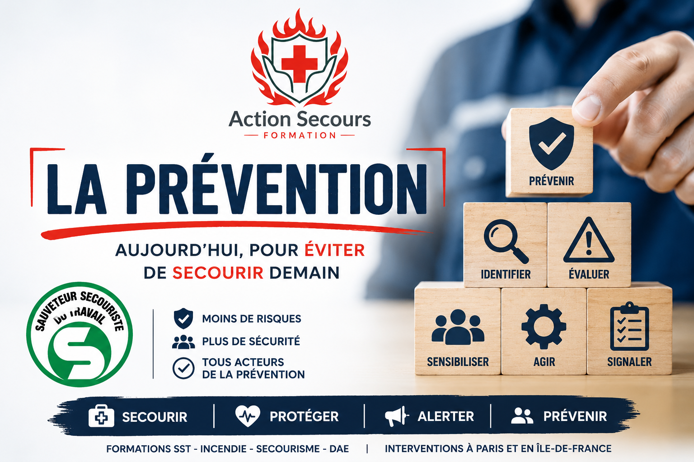
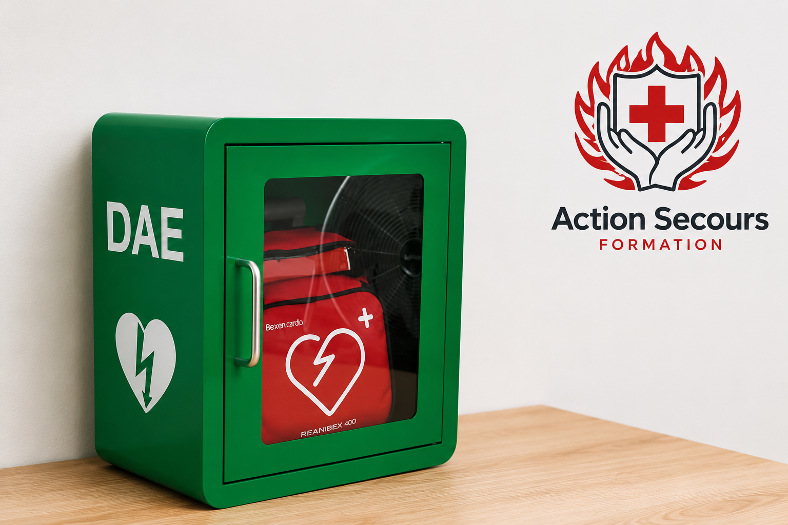
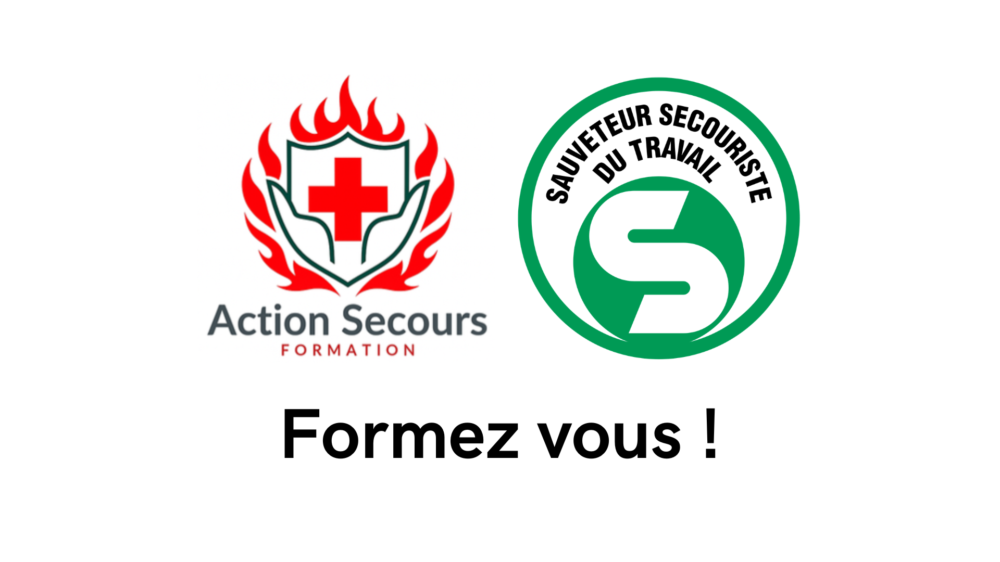

Formation H0 B0 : pour qui est-elle obligatoire ?
Découvrez dans quels cas l’habilitation H0 B0 est requise, quels salariés non-électriciens peuvent être concernés et le rôle de l’employeur.
Lire l’article →Retrouvez nos articles sur la formation SST, les gestes de premiers secours, la prévention des risques professionnels et la sécurité des entreprises à Paris et en Île-de-France.
Découvrez dans quels cas l’habilitation H0 B0 est requise, quels salariés non-électriciens peuvent être concernés et le rôle de l’employeur.
Lire l’article →Découvrez les tarifs d’une formation SST initiale et d’un MAC SST à Paris, ce qui fait varier les prix et comment optimiser le coût pour votre entreprise.
Lire l’article →
La formation SST ne se limite pas aux gestes de premiers secours. Découvrez comment les salariés participent activement à la prévention des risques professionnels et développent une véritable culture de sécurité.
Lire l’article →
À Paris et en Île-de-France, la formation Sauveteur Secouriste du Travail contribue à créer une véritable culture de prévention au sein des entreprises.
Lire l’article →
Découvrez le rôle du défibrillateur, son fonctionnement, qui peut l’utiliser, les applications pour localiser un DAE et pourquoi se former peut sauver une vie.
Lire l’article →
Utiliser un extincteur n’est pas compliqué, mais encore faut-il savoir lequel choisir, comment le manipuler et quelles erreurs éviter face à un départ de feu.
Lire l’article →
Cadre INRS, déroulé pédagogique, certification, prévention des risques professionnels et MAC SST : découvrez ce qui rend la formation SST particulière.
Lire l’article →Étouffement, chute, brûlure, malaise ou perte de connaissance : découvrez l’intérêt de la formation SST pour les assistantes maternelles et les professionnels de la petite enfance.
Lire l’article →